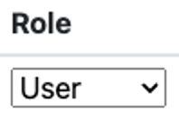

Getting Started in ColdFront as an Instructor#
These instructions will help you get access to HPC resources for your class. If you are the instructor of record in my.smu, much of this process will be easy and automated for you. If you are not an instructor of record for a course but would like to set up a course (e.g. workshop or bootcamp), please reach out to help@smu.edu and include [HPC] in the subject line.
More information on ColdFront is available here.
Setting up your class#
Login to ColdFront via SSO with your SMU credentials
Select Add a class
Select your course from the drop down menu
Select which sections you would like to have access to HPC resources
Mark which additional options you need
Select Submit once complete.
{kind=link}
Once a class is created you will have options to Add additional users and request additional allocations.
To add Students and Other Users#
For classes, the management of students is synched hourly with class enrollment records starting a week before the semester starts. Once a class is requested in ColdFront, students that add or drop will be added or removed from your class and allocations accordingly.
Note
All students will appear 7 days before the semester begins.
If you wish to add a user who is not enrolled to your class (e.g. a co-instructor), follow the steps below.
Note
This is not especially common. Do not add students that will be enrolled in the course as this could disrupt their file permissions.
Once your class is created, select Add Users within the Users section of your class

If you are searching by “Exact Username Only” search for the user via username (first part of NetID)
Note
If you are adding multiple users, you can list them all in the Search String box
If you are searching by “All Fields” you can enter last name or username (first part of NetID)
Once you’ve found and selected the user(s), select the role the user should have
Then Add Selected Users to Project
Once complete you will see all users requested under the Users section
{kind=link}
In Class#
Once you are ready for your students to use the resources, have them go to hpcaccess.smu.edu and log in to ColdFront. They will see your class and associated allocations on their dashboard. They will need to click on your class to be taken to the class page.
Under Allocations, they will see a button for Review and Accept Policies and Guidelines to activate for to each allocation. They will need to accept the Policies and Guidelines for each allocation in order to get access the those resources.
Note
Once a student is in a course and accepts the Policies and Guidelines, they will be granted an HPC account. In most cases this process is instantenous, however if you have a large number of files in a storage allocation for a class, this could take several minutes.
If you are using the Open OnDemand portal hpc.smu.edu for your course, students will be able to click on the link in the top menu bar to go directly to the M3 Portal.
If you are using srun commands or sbatch scripts, your students will need to add the following to their commands/scripts in order to utilize the resources.
#SBATCH -A slurm_account_name
or
srun -A slurm_account_name …
The slurm_account can be found in the Information field under Allocations.
{kind=link}
To Request Additional Resource Allocations#
All classes are granted a default compute allocation consisting of Core Usage (Hours) and Memory Usage (Hours). Depending on the options chosen at the creation of the project, this may contain Accelerator Usage (Hours) or a second allocation for Storage. The Storage allocation is Read-Only for students by default.
If you find your class needing additional resources, you can request additional allocations for either Compute or Storage, by following the instructions below.

Next to Allocations, Select the +Request Resource Allocation button
Complete all required fields
Select the users you’d like to add to this allocation
Select Submit
Once complete you will see your status request as Pending Review under Allocations
To view your current usage#
Under Allocations select the folder icon
You will see your Allocation details, Policies and Guidelines Agreements, and Usage by Hours
Concluding the Semester#
At the end of the semester, your class will be Archived. Once you class is successfully archived, you will not be able to make any changes but will still be able to view some details at any time
{kind=link}